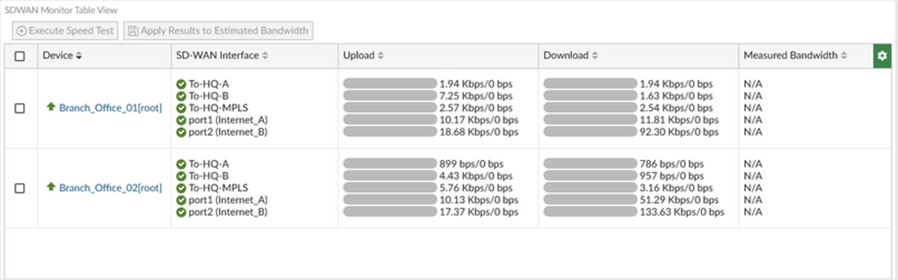
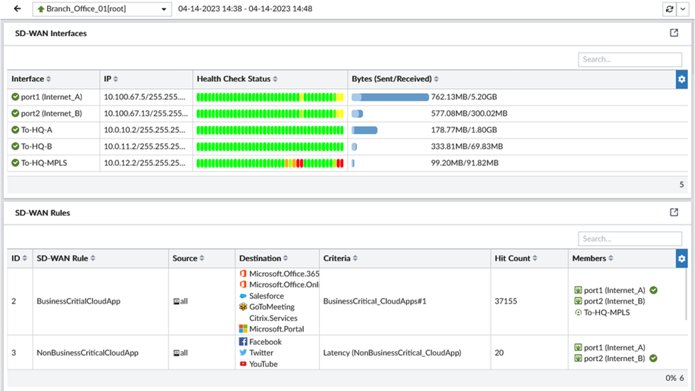
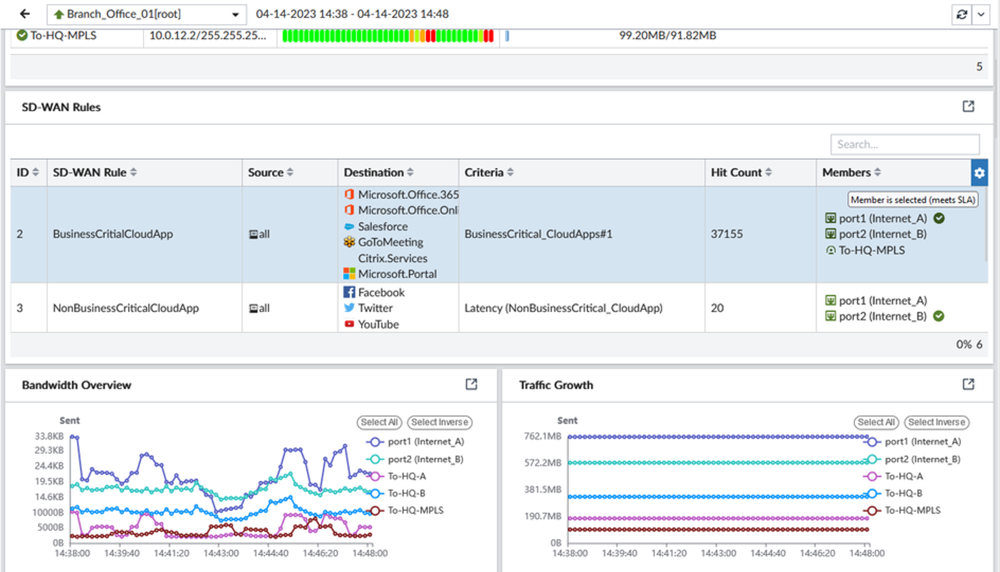
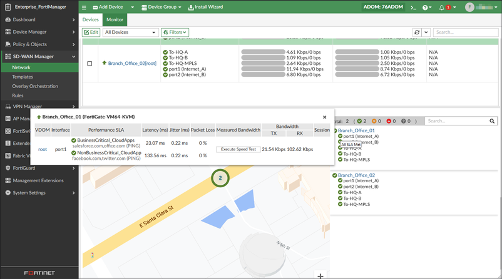
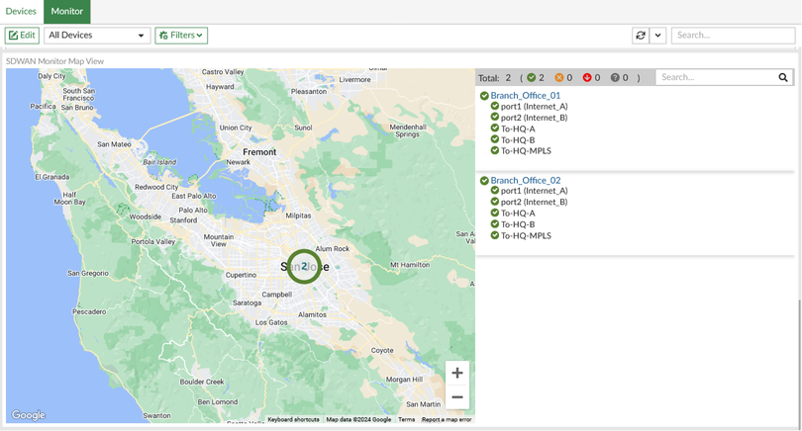

Mục 6.1 — Dashboard tổng quan
Giám sát SD-WAN tập trung qua FortiManager
Phần này minh họa cách hệ thống có thể giám sát SD-WAN tập trung thông qua FortiManager SD-WAN Manager. Các màn hình giúp đội vận hành theo dõi trạng thái thiết bị, đường truyền, SD-WAN rule, SLA, VPN tunnel và lưu lượng tại nhiều site từ một giao diện tập trung — không cần đăng nhập từng FortiGate riêng lẻ.

Màn hình SD-WAN Monitor dạng dashboard/table view trên FortiManager là giao diện tổng quan giúp đội vận hành theo dõi nhiều thiết bị FortiGate và các interface SD-WAN tại các site khác nhau.
-
Devices by Link StatusTổng hợp trạng thái link theo từng thiết bị — nhận biết nhanh thiết bị nào có tất cả interface hoạt động bình thường, thiết bị nào có interface cần chú ý hoặc đang mất kết nối.
-
Devices by SLA StatusTổng hợp trạng thái SLA của các thiết bị — cho biết các site có đang đạt các tiêu chí SLA đã cấu hình hay không.
-
Application Status / Rule StatusCho biết trạng thái ứng dụng hoặc rule SD-WAN — hỗ trợ đánh giá nhanh rule nào đang hoạt động và rule nào có dấu hiệu bất thường.
-
Bảng chi tiết thiết bịHiển thị từng thiết bị, từng SD-WAN interface, trạng thái upload/download, link mode, lỗi TX/RX và rule liên quan.
Mục 6.2 — Chất lượng đường truyền
Giám sát chất lượng đường truyền

SD-WAN Monitor Table View cho phép xem chi tiết từng thiết bị và từng interface SD-WAN dưới dạng bảng. Màn hình này phù hợp để kiểm tra nhanh site nào đang có lưu lượng cao, interface nào đang được sử dụng và đường truyền nào cần được đánh giá lại về băng thông.
-
DeviceTên thiết bị hoặc site, ví dụ
Branch_Office_01,Branch_Office_02. -
SD-WAN InterfaceDanh sách interface hoặc tunnel thuộc SD-WAN, ví dụ
port1 (Internet_A),port2 (Internet_B),To-HQ-A,To-HQ-B. -
Upload / DownloadLưu lượng gửi/nhận trên từng interface — theo dõi mức sử dụng thực tế của từng đường truyền.
-
Measured BandwidthKết quả đo băng thông thực tế nếu có thực hiện speed test trên interface.
-
Execute Speed TestChức năng kiểm tra băng thông thực tế của đường truyền — hữu ích khi cần xác minh chất lượng sau khi ISP thay đổi hoặc có khiếu nại.
-
Apply Results to Estimated BandwidthCó thể dùng kết quả đo để cập nhật thông tin băng thông tham chiếu cho SD-WAN, giúp thuật toán load balancing phân bổ tải chính xác hơn.
Trạng thái health check từng interface

Màn hình tập trung vào phần SD-WAN Interfaces của một site, hiển thị lịch sử trạng thái health check dưới dạng chuỗi màu sắc theo thời gian — giúp nhận biết nhanh đường truyền nào ổn định và đường nào có dấu hiệu suy giảm.
-
InterfaceTên interface hoặc tunnel, ví dụ
port1 (Internet_A),port2 (Internet_B),To-HQ-A,To-HQ-MPLS. -
IPĐịa chỉ IP của interface hoặc tunnel đầu nguồn.
-
Health Check StatusChuỗi trạng thái màu xanh/vàng/đỏ thể hiện chất lượng đường truyền theo thời gian — xanh là đạt SLA, vàng/đỏ là cần chú ý hoặc có sự cố.
-
Bytes Sent / ReceivedLưu lượng đã gửi/nhận trên từng interface — dùng để đánh giá phân bổ tải thực tế.
-
SD-WAN Rules liên quanCho biết rule nào đang sử dụng các interface tương ứng — giúp xác định ảnh hưởng khi một đường truyền gặp sự cố.
Mục 6.3 — Traffic theo ứng dụng
Giám sát traffic theo ứng dụng và chi nhánh

Màn hình chi tiết của một site, ví dụ Branch_Office_01, bao gồm phần SD-WAN Rules, biểu đồ băng thông và tăng trưởng lưu lượng. Đây là màn hình giúp đội vận hành kiểm tra cụ thể một rule đang điều hướng traffic qua đường truyền nào và ứng dụng nào đang sử dụng nhiều băng thông nhất.
-
SD-WAN RulesDanh sách rule đang áp dụng cho site — hiển thị tên rule, điều kiện match và đường truyền đang được chọn.
-
Destination / ApplicationCác nhóm ứng dụng hoặc đích truy cập, ví dụ Microsoft Office 365, Salesforce, GoToMeeting, Citrix, Facebook, YouTube.
-
CriteriaTiêu chí chọn đường truyền đang áp dụng, ví dụ rule cho ứng dụng business critical hoặc rule theo latency.
-
Hit CountSố lượt traffic match vào rule — giúp đánh giá rule có đang được sử dụng hay không, và ứng dụng nào đang chiếm tải nhiều nhất.
-
MembersInterface hoặc tunnel đang được chọn để chuyển traffic, kèm trạng thái có đạt SLA hay không.
-
Bandwidth OverviewBiểu đồ lưu lượng gửi/nhận theo từng interface — theo dõi phân bổ băng thông thực tế giữa các đường truyền.
-
Traffic GrowthXu hướng tăng trưởng lưu lượng trong khoảng thời gian theo dõi — hỗ trợ lên kế hoạch nâng cấp băng thông khi cần.
Kiểm tra chi tiết interface và speed test

Màn hình chi tiết khi kiểm tra một interface tại site, ví dụ Branch_Office_01. Hiển thị toàn bộ chỉ số chất lượng đường truyền đang đo được, đồng thời hỗ trợ thực hiện speed test để xác minh băng thông thực tế.
-
Performance SLASLA đang áp dụng cho interface, ví dụ
BusinessCritical_CloudApphoặcNonBusinessCritical_CloudApp. -
LatencyĐộ trễ đo được tới đích kiểm tra — so sánh với threshold trong SLA để đánh giá đường truyền có đạt yêu cầu.
-
JitterĐộ dao động độ trễ — chỉ số quan trọng với voice/video conference và ứng dụng realtime.
-
Packet LossTỷ lệ mất gói — ảnh hưởng trực tiếp đến chất lượng kết nối, đặc biệt với TCP và các ứng dụng nhạy cảm.
-
Measured BandwidthBăng thông đo được trong lần speed test gần nhất — dùng để xác minh ISP có đảm bảo cam kết băng thông hay không.
-
Execute Speed TestCho phép thực hiện kiểm tra băng thông thực tế theo yêu cầu từ FortiManager — không cần đăng nhập trực tiếp vào FortiGate tại site.
-
Bandwidth TX / RXBăng thông gửi/nhận ghi nhận tại thời điểm kiểm tra — phản ánh tải thực tế trên đường truyền.
Mục 6.4 — Map View & VPN Monitor
Cảnh báo và báo cáo vận hành tập trung

SD-WAN Monitor Map View hiển thị các site trên bản đồ địa lý và trạng thái tổng quan của từng site. Với khách hàng có Hà Nội, TP. Hồ Chí Minh và nhiều site tỉnh, map view giúp nhìn nhanh tình trạng toàn mạng theo khu vực địa lý, thuận tiện cho vận hành và báo cáo cấp quản lý.
-
Vị trí site trên bản đồGiúp đội vận hành hình dung phân bố địa lý của các chi nhánh và nhận biết nhanh khu vực đang có sự cố.
-
Tổng số site / thiết bịHiển thị số lượng thiết bị đang được giám sát trong hệ thống FortiManager.
-
Trạng thái màu sắcThể hiện site đang bình thường (xanh), cần chú ý (vàng) hoặc có sự cố (đỏ) — giúp ưu tiên xử lý nhanh.
-
Danh sách site bên phảiLiệt kê từng site và các interface/tunnel liên quan, ví dụ
Branch_Office_01,port1,port2,To-HQ-A,To-HQ-B. -
Bộ lọc và tìm kiếmHỗ trợ lọc theo nhóm thiết bị, trạng thái hoặc tìm nhanh một site cụ thể khi cần xử lý sự cố.
Giám sát VPN tunnel

Màn hình VPN Monitor cho phép theo dõi trạng thái các VPN tunnel theo dạng bản đồ. Với mô hình dual-hub và ADVPN của khách hàng, VPN Monitor giúp đội vận hành theo dõi trạng thái kết nối nội bộ giữa các site, phát hiện tunnel down và phối hợp xử lý nhanh hơn.
-
VPN tunnel trên bản đồHiển thị liên kết VPN giữa các site/hub — nhận biết nhanh tunnel nào đang up/down theo màu sắc.
-
Show Down Tunnels OnlyLọc nhanh các tunnel đang down để ưu tiên xử lý sự cố — hữu ích khi hệ thống có nhiều site.
-
All CommunitiesLọc theo nhóm VPN/community — phân tách rõ các nhóm kết nối khác nhau trong topology.
-
ReloadCập nhật lại trạng thái tunnel theo thời gian thực — kiểm tra nhanh sau khi xử lý sự cố hoặc thay đổi cấu hình.
-
Map viewGiúp hình dung kết nối giữa các site theo vị trí địa lý — đặc biệt hữu ích với mô hình dual-hub có nhiều site nhánh phân tán.
Mục 6.5 — Giá trị vận hành
Giá trị vận hành từ giám sát tập trung
Các màn hình giám sát tập trung trên FortiManager/FortiManager SD-WAN Manager giúp NetNam và khách hàng có cùng một góc nhìn vận hành về hệ thống SD-WAN — từ tổng quan toàn mạng đến chi tiết từng đường truyền tại từng site.